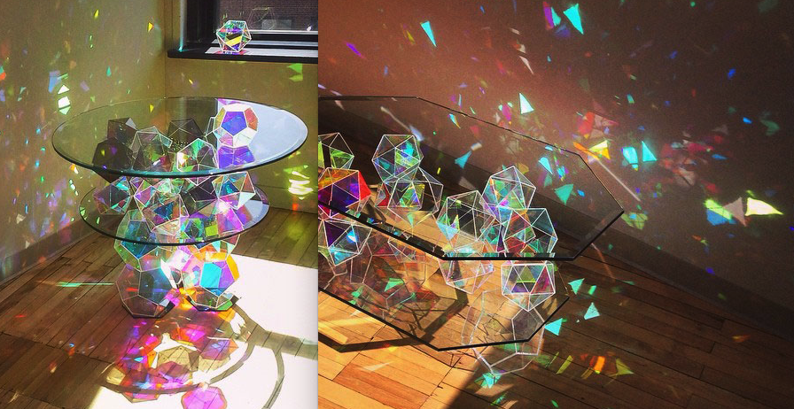

Extremely deadly, the Silexia renders its prey to ribbons with its assassin-worthy tactics and skill. It attacks by shattering itself into a self-controllable mass of glass shards, and strikes against its unlucky prey by piercing into their bodies from all sides.
Its stealthy, yet frail nature prevents it from attacking prey head-on, much preferring to stalk them in the dead of night or ambushing them from hidden spots in the ground. Despite being made almost entirely of broken glass, it’s absolutely silent when moving as if it were a ghost.
